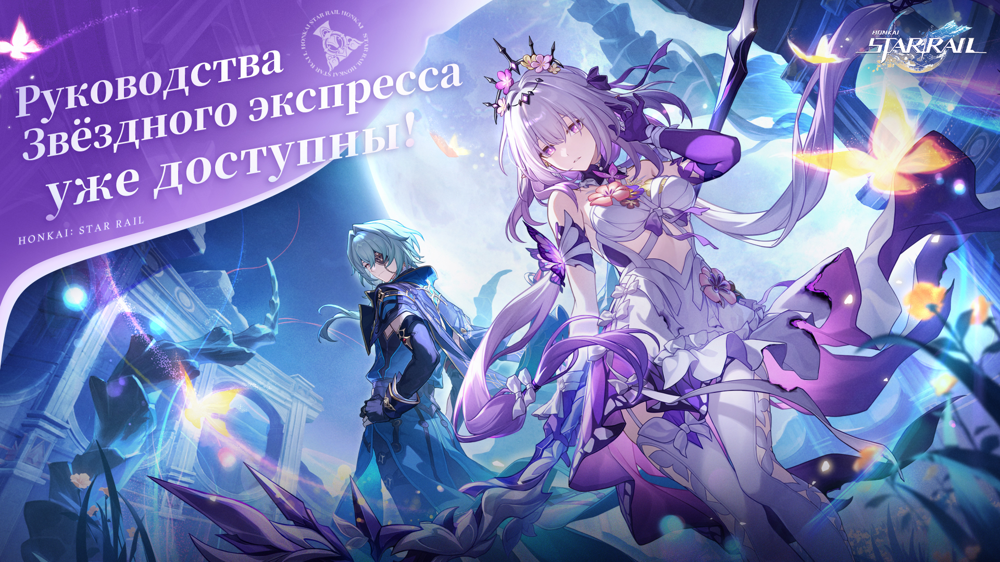

«Руководство по Звёздному экспрессу» уже доступно!
Ознакомьтесь с новыми стратегиями! Веб-страница «Руководство по Звёздному экспрессу» уже доступна
Примите участие в веб-событии, чтобы получить шанс участвовать в розыгрыше и выиграть до 1000 ед. Звёздного нефрита!
«Путешествие к вершинам вместе со звёздными попутчиками» - конкурс руководств к двухлетней годовщине
В честь второй годовщины Honkai: Star Rail проводится особый конкурс руководств!
Независимо от того, являетесь ли вы мастером стратегии или экспертом по игровым приёмам, если у вас есть глубокое понимание игры или интересные мысли, поделитесь своим творчеством с игроками по всему миру и получите шанс выиграть денежный приз.
■ Как принять участие ■
Приём работ: 09 апреля 2025 14:00 - 20 мая 2025 23:59 (UTC+8)
- Чтобы принять участие в конкурсе, опубликуйте пост с указанным хештегом на X, Instagram, Youtube, HoYoLAB или других платформах.
- Чтобы принять участие в конкурсе, опубликуйте пост с указанным хештегом в любых социальных сетях и заполните анкету.
■ Награды события ■
Наставник звёзд (8 победителей)
$800 (специальная денежная награда в честь годовщины) + Звёздный нефрит ×6000
Мастер стратегий (20 победителей)
$300 (специальная денежная награда в честь годовщины) + Звёздный нефрит ×3000
Свет открытия (40 победителей)
Звёздный нефрит ×1000
Приз удачи (10 победителей)
Случайный мерч Honkai: Star Rail
※ Правила события и условия подачи заявок смотрите в правилах на веб-странице.